Economía Internacional — Clase 1
La evolución del comercio mundial
UMET - Licenciatura en Economía | 2026
¿Qué es la economía internacional?
- Estudia las relaciones económicas entre países
- Los flujos de bienes, servicios, capitales y personas que cruzan fronteras
- Las reglas e instituciones que los gobiernan
- El comercio es la manifestación más visible
La pregunta central del curso
- ¿Cómo se inserta un país en la economía mundial?
- ¿Qué consecuencias tiene eso para su desarrollo?
- Tres dimensiones: comercio, finanzas, producción
- Caso de estudio permanente: Argentina
El mapa del programa
20 clases, 7 unidades
- **Primero** (Unidad 1): Qué pasó en la historia del comercio y cómo medirlo
- **Después** (Unidades 2-3): Por qué los países comercian — teorías clásicas y nuevas
- **Luego** (Unidad 4): Quién gana y quién pierde — la visión estructuralista
- **También** (Unidades 5-6): Quién organiza el comercio hoy y qué políticas hay
- **Finalmente** (Unidad 7): Dónde estamos hoy — crisis, guerra comercial, Argentina
¿Cómo se evalúa?
Evaluación continua + coloquio final
- **Al final de cada unidad**: examen multiple choice en la plataforma
- Algunas preguntas requieren procesar datos (no es solo memorizar)
- **Para promocionar**: todas las evaluaciones con 7 o más
- Se pueden recuperar las evaluaciones que salieron mal
- **Coloquio final**: discusión grupal o individual sobre casos reales
Agenda: La evolución del comercio
- Pregunta de hoy: ¿Cómo llegamos hasta acá?
- Marco analítico: Tecnología + Reglas + Poder
- Convergencia y divergencia: ¿quién creció y quién se quedó atrás?
- Las 5 etapas del comercio mundial (1500-2024)
- Cierre: anticipar los indicadores
Tecnología + Reglas + Poder
El marco para entender cualquier período
- TECNOLOGÍA: barcos, ferrocarril, telégrafo, containers, internet
- REGLAS: aranceles, tratados, moneda, instituciones (OMC, FMI)
- PODER: hegemonía, imperios, capacidad de imponer reglas
- Las tres deben alinearse para que el comercio florezca
Las 5 etapas: visión general
- 1. Economía-mundo ibérica (1500-1650): plata, especias, imperios
- 2. Primera globalización (1800-1914): vapor, telégrafo, patrón oro
- 3. Colapso (1914-1945): guerras, proteccionismo, depresión
- 4. Bretton Woods (1945-1971): EEUU hegemón, tipos fijos, reconstrucción
- 5. Globalización financiera (1980-hoy): containers, OMC, China
Convergencia, divergencia y comercio
¿Qué explica el crecimiento? ¿Tecnología o comercio?
- PIB per cápita = proxy de desarrollo. ¿Por qué unos países crecen y otros no?
- Dos grandes explicaciones: cambio tecnológico (producir más/mejor) y apertura comercial (acceso a mercados, especialización)
- ¿El comercio causa crecimiento o el crecimiento genera comercio?
- La evidencia: no hay respuesta única. Importa CÓMO te insertás, no solo SI te insertás
La Gran Divergencia
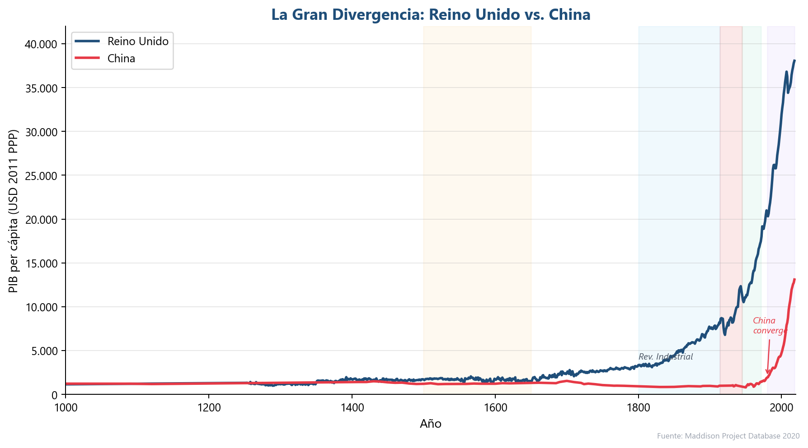
Fuente: Maddison Project Database 2020
- Año 1000: China y Europa tenían un PIB per cápita similar (~$1.100)
- Hasta 1800: diferencias pequeñas. China era una economía avanzada
- Revolución Industrial: UK se dispara. Comercio + tecnología + imperio
- Desde 1980: China converge aceleradamente (de $1.000 a $13.000 en 40 años)
Trayectorias regionales
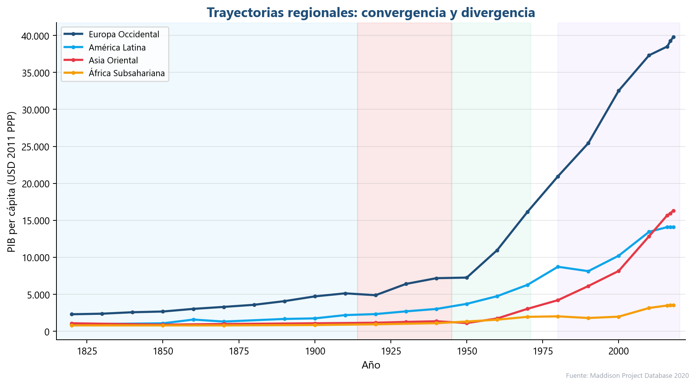
Fuente: Maddison Project Database 2020
- Europa Occidental: de $2.300 a $40.000 (x17 en 200 años)
- Asia Oriental: estancada hasta 1950, después convergencia acelerada
- América Latina: creció pero NO convergió. Siempre ~35% de Europa
- África Subsahariana: divergencia persistente. Hoy ~9% de Europa
Etapa 1: Economía-mundo ibérica (1500-1650)

Fuente: Mapas históricos
- España y Portugal conectan 3 continentes
- Flujos: plata americana → Europa → Asia
- Especias, seda, porcelana de vuelta
- Tecnología: carabela. Reglas: monopolio real. Poder: imperios ibéricos
El Galeón de Manila: primera ruta global
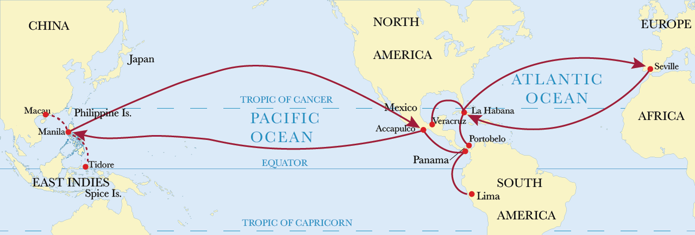
Fuente: Ilustración histórica
- Acapulco → Manila → Acapulco (6 meses de viaje)
- Plata mexicana por seda y porcelana china
- Primera globalización real: conectó los 4 continentes
- Monopolio español hasta la independencia de México
Etapa 2: Primera globalización (1800-1914)

Fuente: Federico-Tena World Trade Historical Database
- Revolución del transporte: vapor, ferrocarril
- Revolución de la comunicación: telégrafo
- Patrón oro: una moneda mundial de facto
- Hegemonía británica: Pax Britannica
Las rutas de vapor conectan el mundo

Fuente: Rand McNally, 1917 - Principales rutas de vapor mundiales
- 1840s: líneas regulares de vapor transatlánticas
- El costo del flete marítimo cae un 90% en el siglo XIX
- Las rutas conectan materias primas del Sur con fábricas del Norte
- Argentina, India, Australia: integradas al mercado mundial por el vapor
El telégrafo: la primera internet

Fuente: Eastern Telegraph Company, 1901
- 1866: primer cable transatlántico exitoso
- 1870: Londres conectada con Bombay
- Precios se unifican: arbitraje instantáneo
- Las noticias viajan más rápido que los barcos
Etapa 3: El gran colapso (1914-1945)

Fuente: Federico-Tena World Trade Historical Database
- 1914-1918: Primera Guerra Mundial
- 1930: Arancel Smoot-Hawley, espiral proteccionista
- 1931: Colapso del patrón oro
- 1939-1945: Segunda Guerra Mundial
El poder detrás del comercio

Fuente: Navy League, 1922 - "Sea Power is World Power"
- Siglo XIX: Pax Britannica, Royal Navy
- 1914-1945: Vacío hegemónico, colapso
- 1945-1971: Pax Americana, Bretton Woods
- 2020s: ¿Transición hegemónica? ¿Fragmentación?
Etapa 4: Bretton Woods (1945-1971)
EEUU reconstruye el sistema
- 1944: Conferencia de Bretton Woods
- Dólar anclado al oro, otras monedas al dólar
- FMI, Banco Mundial, GATT
- Comercio crece pero con controles de capital
El comercio explota bajo Bretton Woods
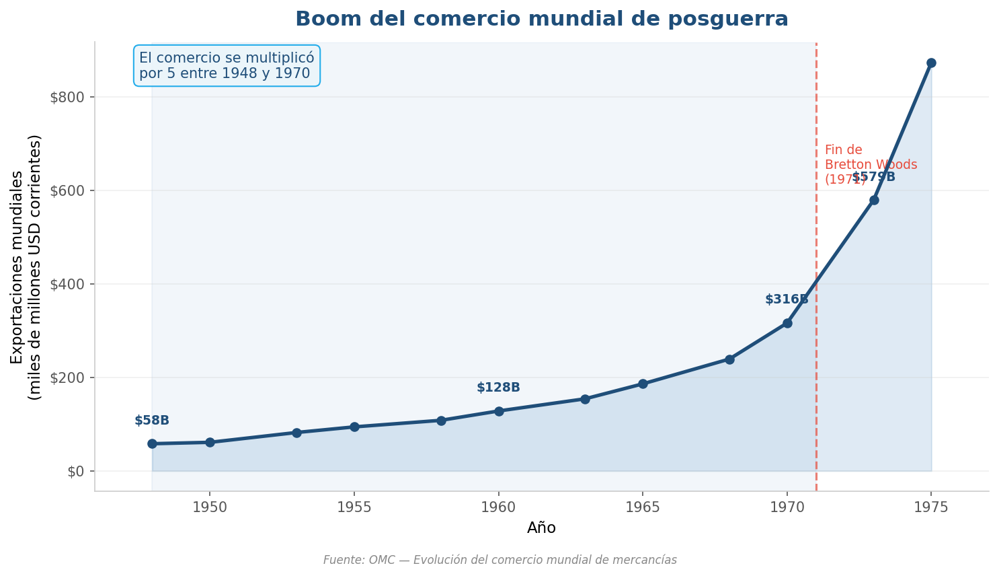
Fuente: OMC — Evolución del comercio mundial de mercancías
- Las exportaciones se multiplican por 5 entre 1948 y 1970
- El GATT reduce aranceles ronda tras ronda
- Tipos de cambio fijos dan previsibilidad a exportadores
- La "edad dorada" del comercio mundial
Las rondas del GATT: reducción progresiva de aranceles
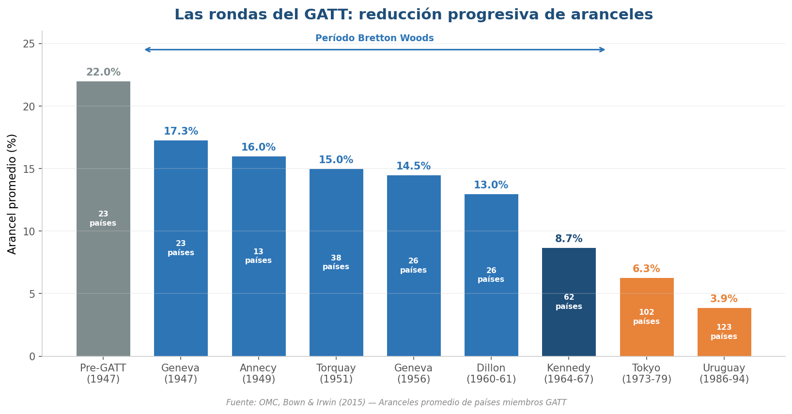
Fuente: OMC, Bown & Irwin (2015)
- 8 rondas de negociación entre 1947 y 1994
- Los aranceles bajan de 22% a 3.9%
- Cada ronda suma más países (de 23 a 123)
- La Ronda Kennedy (1964-67) fue la más ambiciosa del período BW
Los "Treinta Gloriosos": la edad dorada del capitalismo

Fuente: Maddison Project Database 2020
- Europa Occidental: 4.1% anual (recuperación + integración)
- Japón: 8.1% anual (el "milagro económico")
- América Latina: 2.5% anual (creció pero no convergió)
- Nunca antes ni después se creció tanto
El dilema de Triffin: la contradicción del sistema
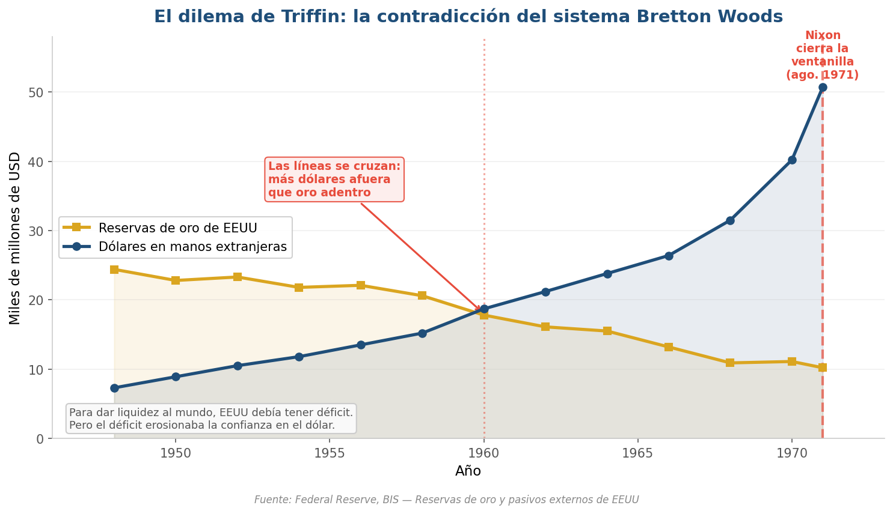
Fuente: Federal Reserve, BIS
- EEUU debía emitir dólares para dar liquidez al mundo
- Pero cuantos más dólares, menos confianza en su convertibilidad
- ~1960: más dólares afuera que oro en la Reserva Federal
- Agosto 1971: Nixon "cierra la ventanilla del oro"
La paradoja de Bretton Woods
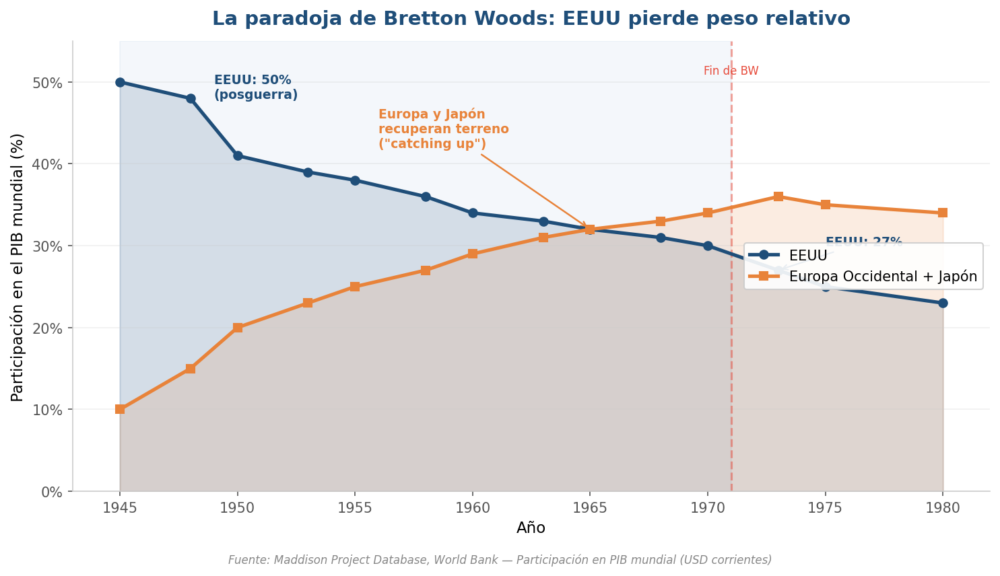
Fuente: Maddison Project Database, Banco Mundial
- 1945: EEUU tiene el 50% del PIB mundial
- 1970: baja al 27% — Europa y Japón recuperan terreno
- El sistema que EEUU diseñó permitió el "catching up" de otros
- Paradoja: el éxito de BW erosionó la hegemonía que lo sostenía
Etapa 5: Globalización financiera (1980-hoy)
El mundo se achica (de nuevo)
- Desregulación financiera: capitales fluyen libremente
- Revolución logística: containers, just-in-time
- OMC (1995): reglas multilaterales
- China entra a la OMC (2001): la fábrica del mundo
Apertura comercial mundial: tres fases de la globalización
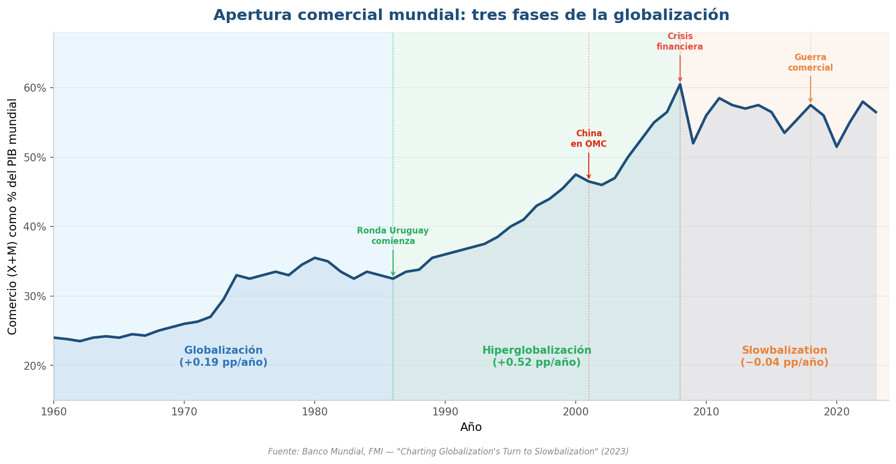
Fuente: Banco Mundial, FMI — "Charting Globalization's Turn to Slowbalization" (2023)
- Globalización lenta (1960-1986): comercio crece al ritmo del PIB (+0.19 pp/año)
- Hiperglobalización (1986-2008): comercio crece el doble que el PIB (+0.52 pp/año)
- Slowbalization (2008-hoy): estancamiento, la globalización se frena (−0.04 pp/año)
- Eventos clave: Ronda Uruguay, China en OMC, crisis 2008, guerra comercial
El ascenso de China: de actor marginal a "fábrica del mundo"
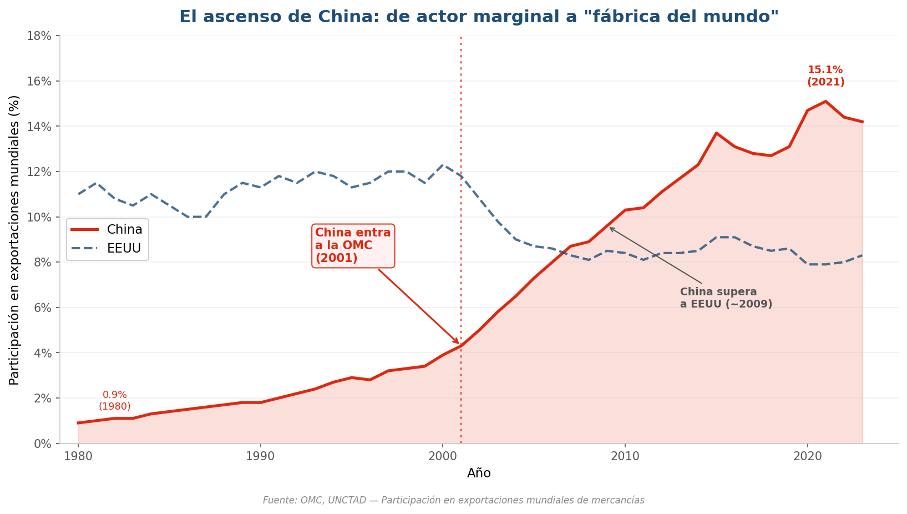
Fuente: OMC, UNCTAD
- 1980: China exportaba menos del 1% del total mundial
- 2001: entra a la OMC → se dispara la curva
- 2009: supera a EEUU como mayor exportador mundial
- Hoy: ~14-15% de las exportaciones mundiales de mercancías
La revolución tecnológica detrás de la globalización
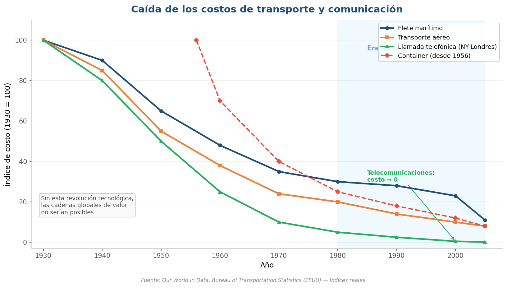
Fuente: Our World in Data, Bureau of Transportation Statistics (EEUU)
- Flete marítimo: −90% desde 1930 (container desde 1956)
- Transporte aéreo: −92% en el mismo período
- Telecomunicaciones: costo → prácticamente cero
- Sin esta caída de costos, las cadenas globales de valor serían imposibles
Inversión Extranjera Directa: la globalización del capital
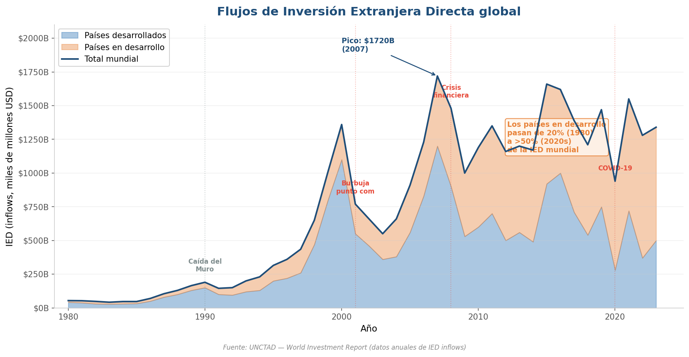
Fuente: UNCTAD — World Investment Report
- La IED global explota desde los 90s (pico de $1.720B en 2007)
- Países en desarrollo pasan de 20% a más del 50% de los flujos
- Crece con cada ola de globalización, se contrae con cada crisis
- Las empresas transnacionales son el vehículo de este proceso
Lo que vimos hoy
- Marco T-R-P: Tecnología + Reglas + Poder explican cada etapa
- Convergencia y divergencia: no todos crecen igual (importa CÓMO te insertás)
- 5 etapas: ibérica → 1ra globalización → colapso → Bretton Woods → globalización financiera
- Mensaje: el comercio crece cuando T+R+P se alinean; cuando falla alguno, colapsa
Después del recreo: los indicadores
¿Cómo medimos todo esto?
- Hasta acá vimos QUÉ pasó en la historia del comercio
- Después del recreo: CÓMO lo medimos
- 9 indicadores para analizar la economía internacional
- Aplicación: Argentina y los desequilibrios globales
Material complementario
Videos y documentales recomendados
- **Ray Dalio — "Principles for Dealing with the Changing World Order"** (YouTube, 43 min) — Ciclos hegemónicos: Holanda → UK → EEUU → ¿China? Mapea directamente las 5 etapas que vimos hoy
- **"Commanding Heights: The Battle for the World Economy"** (PBS, 2002, 3 episodios) — Ep.1: del mercantilismo a Bretton Woods. Ep.2-3: globalización y reformas
- **"The Ascent of Money"** (Niall Ferguson, 2008) — Historia financiera global: bonos, bolsas, seguros y la integración financiera
- **"American Factory"** (Netflix, 2019, Oscar mejor documental) — Fábrica china en Ohio: globalización, desindustrialización y choque cultural
¿Preguntas?
Economía Internacional | Clase 1